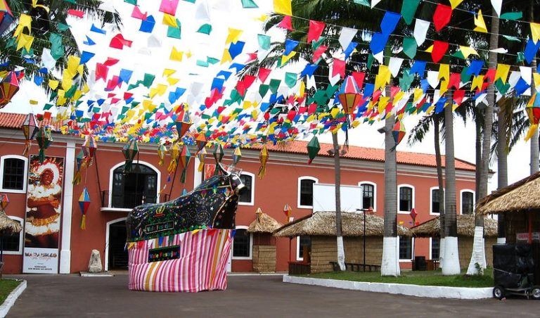
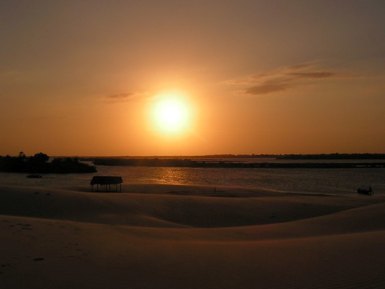

Lençóis Maranhenses
Eles são muito visitado por turistas do mundo todo, atraídos pelas lagoas de água doce instaladas entre as dunas, que fascinam pela cor de suas águas azuis e verdes: uma cena real em um mundo de sonhos.
Mas se quiser fazer o passeio em outros meses do ano, encontrará atrativos igualmente lindos e surpreendentes.
Um deles são as dunas que se movem de um dia para o outro, ao sabor do vento, renovando a paisagem.
São Luís
A única cidade brasileira fundada por franceses, possui muitas atrações culturais para você se deliciar, dentre eles os casarões antigos, em ruas preservadas e as baladas noturnas, que imprimem um ar de modernidade a São Luís.
Em São Luís você retornará aos tempos antigos, quando os azulejos e ladrilhos vinham diretamente de Portugal para enfeitar as fachadas dos casarões
As ruas são bem preservadas e nos levam a refletir sobre nossas heranças coloniais, marcadas por influências de outros povos, como portugueses, franceses, africanos e índios.
Delta do Parnaiba
Situa-se bem na divisa com o estado do Piauí e leva ao êxtase pela beleza de suas praias, espelhos de água dunas, rios e mangues.
Sem falar nos animais silvestres que habitam esse oásis ímpar do Maranhão!
Em busca de maior proximidade com a natureza e visuais diferenciados, os turistas se hospedam em pequenas cidades da região, como Tutóia, Paulino Neves e Araioses.